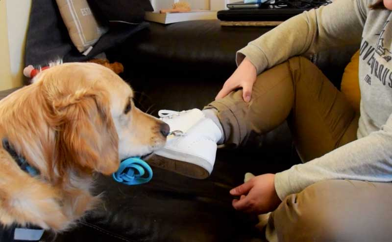
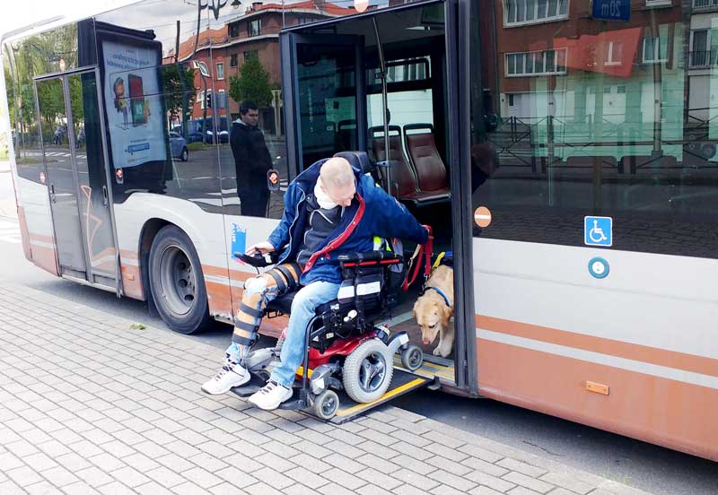

De honden in opleiding hadden een heel speciale les: ze gingen op bezoek bij de DoggieDouche: een selfservice om je hond te wassen.
Veel lachende gezichten bij zorgboerderij Huppeldepup
20/05/2017
Vrijwilligers van Dyadis stonden met een standje op de zorgboerderij Huppeldepup in Humbeek. Ze gaven demo's met assistentiehonden en verkochten een tombola ten voordele van Dyadis.

Kathérine en haar hulphond Ned Filmpje
11/05/2017
"Mijn leven is veranderd sinds de komst van Ned." Kathérine legt uit hoe ze haar hulphond beter leerde kennen tijdens de stage.
Dyadis was aanwezig op het Springfest
05/05/2017
Onze honden waren aanwezig op het Springfest van de Europese School van Brussel III. De leerlingen zamelen ieder jaar een mooi bedrag in voor goede doelen, waaronder Dyadis.

Onze assistentiehonden leren mee met de bus rijden
02/05/2017
Vandaag in de krant Metro België: een bus nemen voor een rolstoelgebruiker en zijn hulphond is niet evident. Jean Marc en zijn hulphond Nielson gingen samen met de Dyadisinstructeurs en enkele gastgezinnen naar een remise van de MIVB Officieel. Zo worden de honden vertrouwd met deze situatie.
geslaagde editie van de jaarlijkse wandeling in Solwaster!
23/04/2017
Al voor de 16e keer werd het evenement georganiseerd door de vrijwilligers van de gemeente Solwaster. Naar goede gewoonte wandelden we een mooi uitgestippeld parcours en werden we nadien verwend met lekkers.
Wij zijn op zoek naar een nieuw pand!
20/04/2017
Dyadis heeft de afgelopen 2 jaar maar liefst 29 assistentiehonden overhandigd, een absoluut record! We blijven groeien om steeds meer mensen gelukkig te kunnen maken met een assistentiehond. Daarom zijn we op zoek naar een nieuwe locatie voor ons opleidingscentrum. Ken jij een pand in of rond Brussel met voldoende ruimte zodat onze honden zich kunnen uitleven? Laat het ons weten!
Valéry en zijn hulphond Jordy Filmpje
04/04/2017
Benieuwd wat een hulphond écht betekent voor een baasje in een rolstoel? Valéry legt het graag uit. Hij en zijn hulphond Jordy zijn sinds dag 1 onafscheidelijk geworden.
Het was een recordeditie: officiële overhandiging 2017!
29/03/2017
Om de twee jaar vindt er een officiële overhandiging plaats. Tijdens dit evenement worden de baasjes en hun assistentiehond die de voorbije twee jaren afgestudeerd zijn, in de bloemetjes gezet. Dit jaar was een speciale editie, want we telden maar liefst 29 duo’s! Zij kregen hun hond officieel overhandigd op het podium.